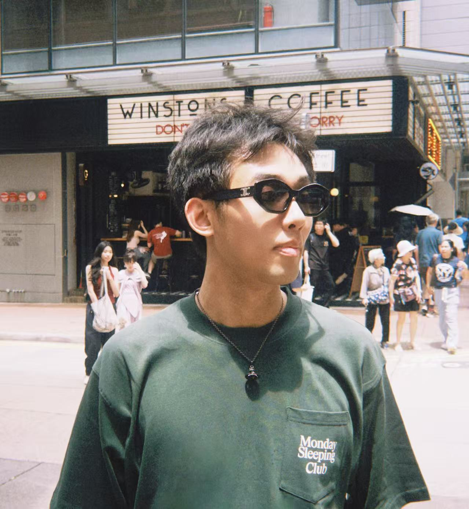
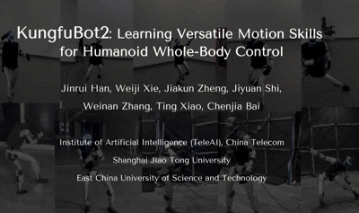

Jinrui Han「韩金睿」
Hi! I am a first-year PhD student at MMLab@HKU(The University of Hong Kong), advised by Prof.Ping Luo. I received my M.Eng. and B.Eng. degrees both from SJTU(Shanghai Jiao Tong University). I am currently a research intern at TeleAI, co-working with Dr. Chenjia Bai and Prof. Xuelong Li to advance research on humanoid whole-body control. Feel free to contact me for any discussions or collaborations via email or wechat !{kind=link}
Research interests:
Humanoid Whole Body Control, Humanoid Loco-Manipulation, Humanoid VLA.
🎓 affiliations
 2026 - Now
2026 - Now
2025 - Now
 2019 - 2026
2019 - 2026
B.Eng. & M.Eng.
Shanghai Jiao Tong University
📰 news
- 2026-04 HUSKY is accepted by RSS 2026.
- 2026-03 Invited talk at 具身智能之心.
- 2026-02 Release the project and code for HUSKY, TextOp, HumanoidSoccer.
- 2026-01 KungfuBot2 is accepted by ICRA 2026.
- 2025-10 Release the project and code for KungfuBot2.
- 2025-09 KungfuBot is accepted by NeurIPS 2025.
- 2025-06 Invited talk at 深蓝学院 and OpenGRO.
- 2025-06 Release the project and code for Kungfubot.
📄 projects

HUSKY: Humanoid Skateboarding System via Physics-Aware Whole-Body Control
TL;DR — A reinforcement learning–based whole-body control framework for stable and agile humanoid skateboarding.

KungfuBot2: Learning Versatile Motion Skills for Humanoid Whole-Body Control
TL;DR — A unified whole-body controller that enables humanoid robots to learn diverse and dynamic behaviors within a single policy.

KungfuBot: Physics-Based Humanoid Whole-Body Control for Learning Highly-Dynamic Skills
TL;DR — A physics-based humanoid control framework, aiming to master highly-dynamic human behaviors such as Kungfu and dancing.